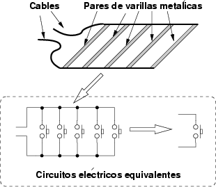

Next: 2 Sistema de medición Up: 4 Arquitectura del Sistema Previous: 4 Arquitectura del Sistema


Next: 2 Sistema de
medición Up: 4
Arquitectura del Sistema Previous: 4
Arquitectura del Sistema
|
 |
Figure: Esquema de la plataforma de contactos y sus circuitos eléctricos equivalentes
La plataforma empleada es la misma que la del
sistema de Boscosystem. Está constituida por varios pares de
varillas metálicas, paralelas y equidistantes (figura
 ).
Cada par de varillas funciona como un contacto, uniéndose
cuando el individuo está sobre ellas y volviendo a su posición
inicial en caso contrario.
).
Cada par de varillas funciona como un contacto, uniéndose
cuando el individuo está sobre ellas y volviendo a su posición
inicial en caso contrario.
El circuito eléctrico equivalente (mostrado
en la figura
 )
es una serie de pulsadores conectados en paralelo, que a su vez son
equivalentes a un único pulsador que se activaría
cuando el individuo está encima de la plataforma (cerrando el
circuito)
)
es una serie de pulsadores conectados en paralelo, que a su vez son
equivalentes a un único pulsador que se activaría
cuando el individuo está encima de la plataforma (cerrando el
circuito)
La construcción de la plataforma está descrita en [10].